So kann’s aussehen.Bautagebuch · Phase 01 Planung – Vor dem ersten Spatenstich
Dies könnte Ihre Baustelle sein! Wir haben ein Einfamilienhaus mit Drohnenaufnahmen dokumentiert, um Ihnen die verschiedenen Bauphasen zu zeigen – vom Ausheben der Fundamente bis zum fertigen Dach. So könnte auch Ihr Bauprojekt aussehen.
Vor Baubeginn muss zunächst eine Bauplanung vom Architekten erstellt werden. Diese muss mittels eines Bauantrags im jeweiligen Bauamt genehmigt werden. Um die Planungsphase abzuschließen, muss die Baumaßnahme von einem Statiker berechnet werden.
Bauzeitenplan · Einfamilienhaus16 Phasen bis schlüsselfertig
- 01Planung
- 02Fundamente ausheben
- 03Fundamente betonieren
- 04Bodenplatte einschalen
- 05Bodenplatte betonieren
- 06Mauerwerk anlegen
- 07Mauerwerk kleben
- 08Filigrandecke verlegen
- 09Decke betonieren
- 10Mauerwerk Obergeschoss
- 11Filigrandecke Obergeschoss
- 12Decke armieren und betonieren
- 13Richtfest
- 14Dach vorbereiten
- 15Dach eindecken
- 16Schlüsselfertig
Fundamente aushebenSchnurgerüst und Minibagger
Los geht’s. Nach Fertigstellung der Sandplatte wird ein Schnurgerüst aufgestellt. Nun können die Fundamente mit dem Minibagger entlang der Schnüre ausgehoben werden. Nach dem Ausheben werden noch Eisen und der Fundamenterder eingebaut.
Fundamente betonierenGründung und Frostschürze
Jetzt kann der Betonmischer kommen. Die Fundamente werden betoniert. Sie dienen neben der stabilen Gründung gleichzeitig als Frostschürze.
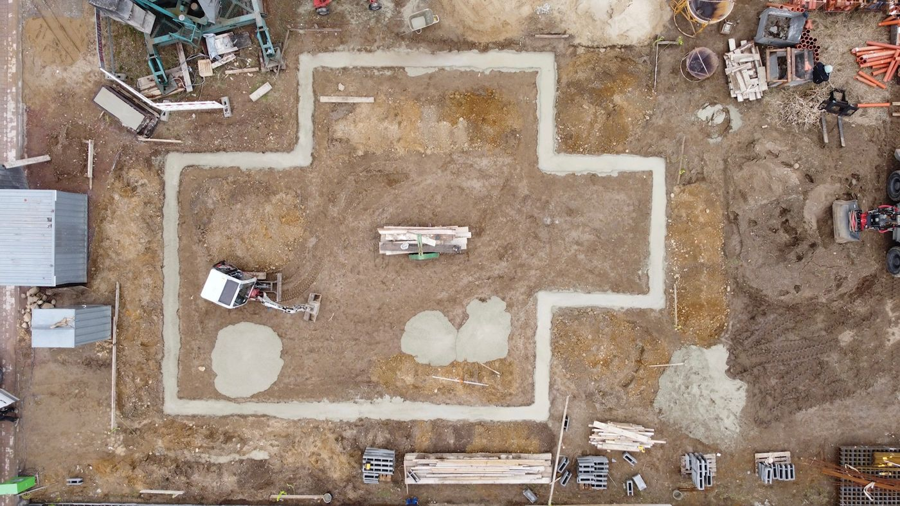
Bodenplatte einschalenEntwässerung, Folie, Bewehrung
Bevor wir die Bodenplatte mit Holzbohlen einschalen, bauen wir noch die Entwässerung mit KG-Rohren ein und lassen diese 50 cm aus dem Baukörper herausstehen. Danach Baufolie ausbreiten, um darauf Unter- und Oberbewehrung einzubauen.
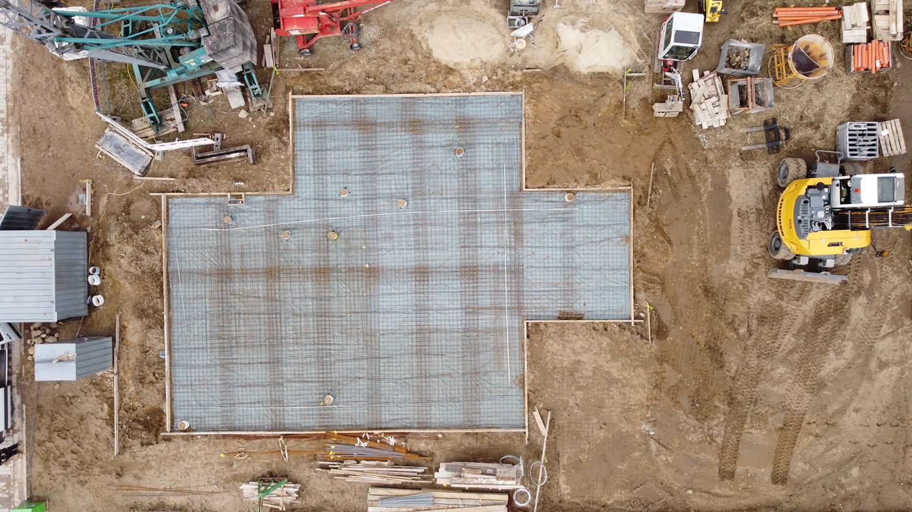
Bodenplatte betonierenBetonpumpe und Rüttelpatsche
Am besten bringt der Betonmischer auch eine Betonpumpe mit, um den Beton gleichmäßig und präzise einzubauen. Wenn der Beton eingebaut ist, fahren wir die Fläche mit der Rüttelpatsche ab, um Lufteinschlüsse zu vermeiden.
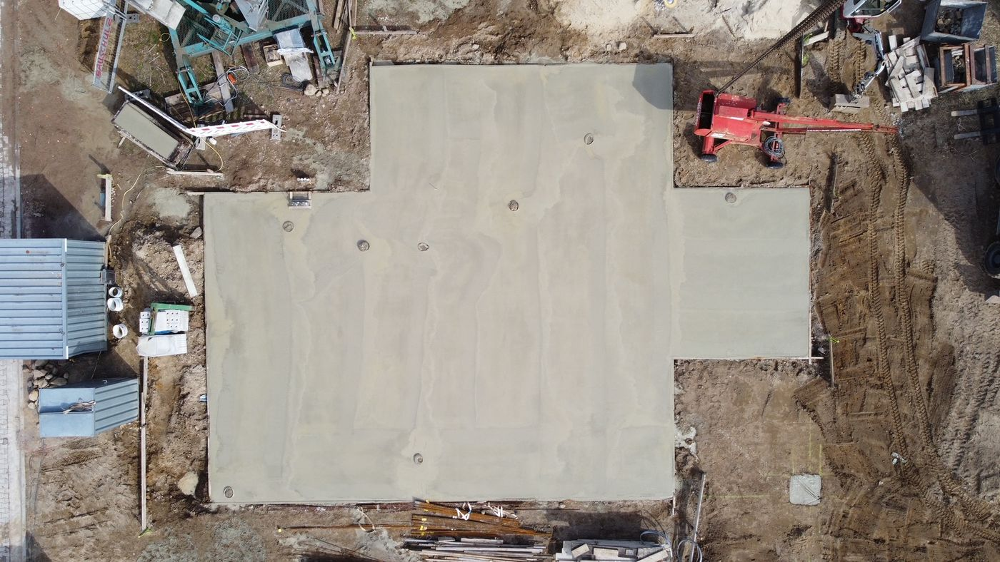
Mauerwerk anlegenErdgeschoss · Kimmschicht
Nach ein paar Tagen Ruhe für die Bodenplatte werden Material und Hilfsmittel auf der Platte angeordnet. Bevor wir mit der Kimmschicht beginnen, wird unter allen Wänden die Mauersperrbahn verschweißt. Die Kimmschicht liegt im Mörtelbett und ist die unterste Steinschicht: Sie gleicht alle Unebenheiten des Betons aus und bildet eine plane Oberfläche.
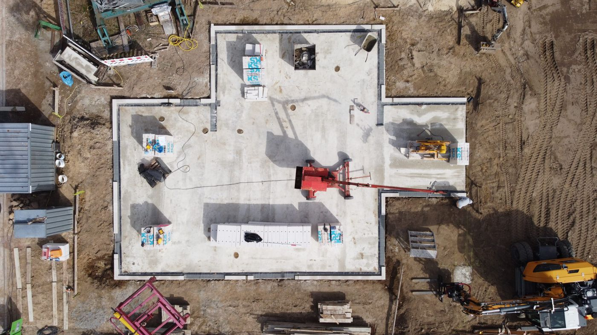
Mauerwerk klebenErdgeschoss · Kalksandstein im Verband
Nun werden die großformatigen Kalksandsteine mit dem Versetzkran im Verband aufeinander geklebt. Bei Türöffnungen wird ein Sturz eingebaut. Fensteröffnungen bleiben meist deckengleich, um Platz für den Rollladenkasten zu haben.
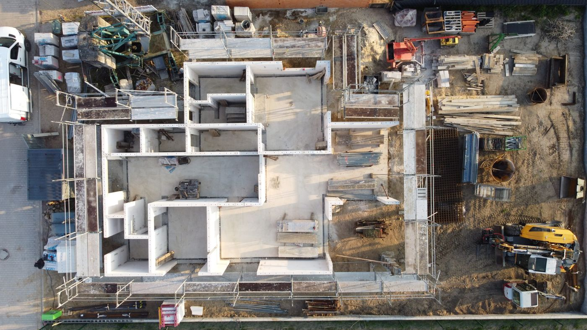
Filigrandecke verlegenErdgeschoss · stützen, verlegen, armieren
Bevor die Filigrandecke auf die fertigen Wände kommt, muss die künftige Decke von unten gestützt werden – mit ausreichend Drehsteifen und Dokaträgern. Filigranelemente sind fertig gelieferte, mit Eisen armierte Betonplatten und bilden die erste Deckenschicht. Dann kommen Kabel für die Deckenbeleuchtung hinein, Durchlässe für Wasser- und Abwasserleitungen werden vorbereitet, jede Menge Eisen eingebaut und die Decke außen herum mit Bohlen eingeschalt.
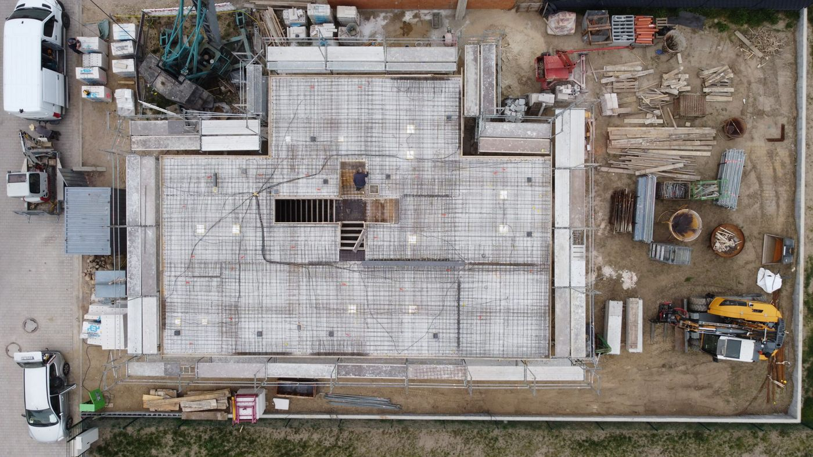
Decke betonierenErdgeschoss
Wenn alle wichtigen Dinge in der Decke liegen, kann betoniert werden. Den frischen Beton fahren wir wieder mit der Rüttelpatsche ab, um eine möglichst gerade Deckenoberfläche zu bekommen.
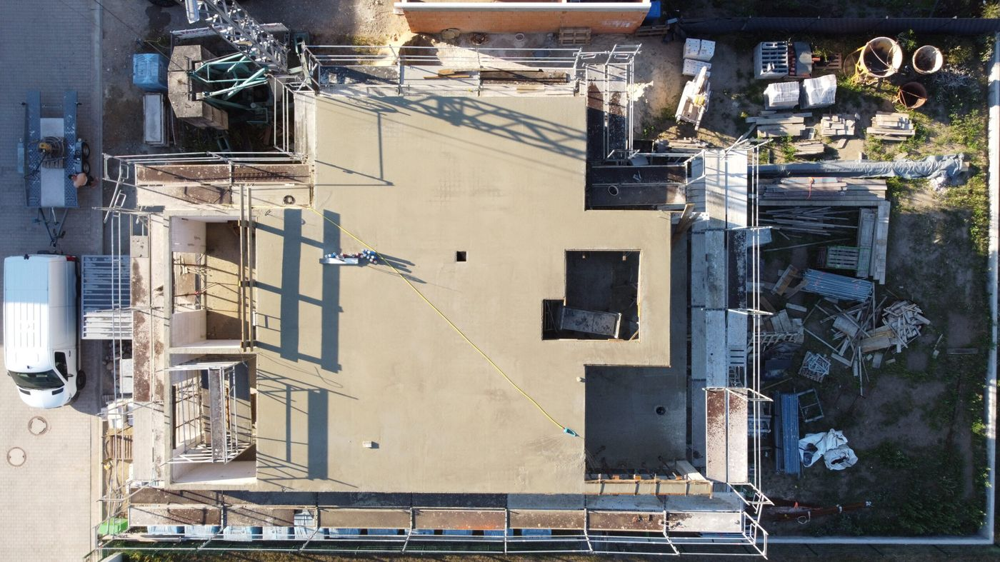
Mauerwerk ObergeschossZweite Runde mit dem Versetzkran
Nach kurzer Ruhephase wird die Decke wieder mit Material und Maschinen bestückt. Die Wand beginnt erneut mit der Kimmschicht, danach kleben wir mit großformatigen Steinen und dem Versetzkran weiter.
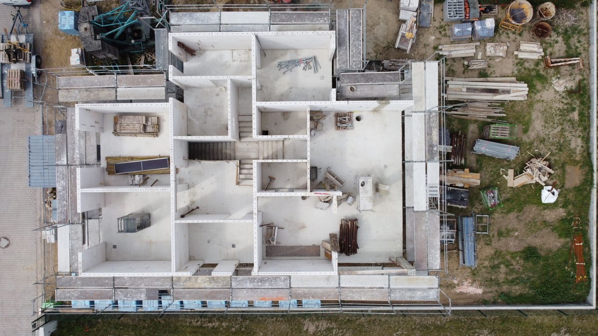
Filigrandecke ObergeschossZweite Betondecke
Bei diesem Bauvorhaben ist eine zweite Betondecke geplant – gleicher Vorgang wie im Erdgeschoss: Filigranelemente präzise mit dem Turmdrehkran verlegen, mit Holzbohlen ringsum einschalen, ebenso den Luftraum von innen.
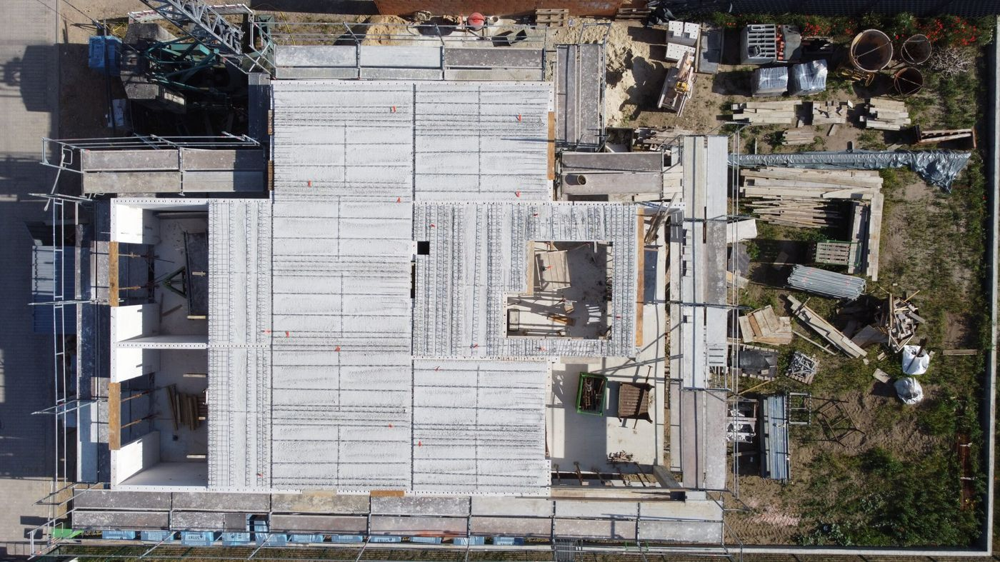
Decke armieren und betonierenObergeschoss · Leitungen, Lüftung, Eisen
Strom-, Wasser- und Abwasserleitungen verlegen, die Rohrleitungen für die Lüftungsanlage installieren: Die blauen Rohre sind Zuluft, die roten Abluft. Dann wird die Decke mit Eisen bewehrt. Jetzt kann der Betonmischer wieder kommen – wir pumpen den Beton hoch, bauen präzise nach Laser ein und ziehen zum Schluss mit der Rüttelpatsche ab.
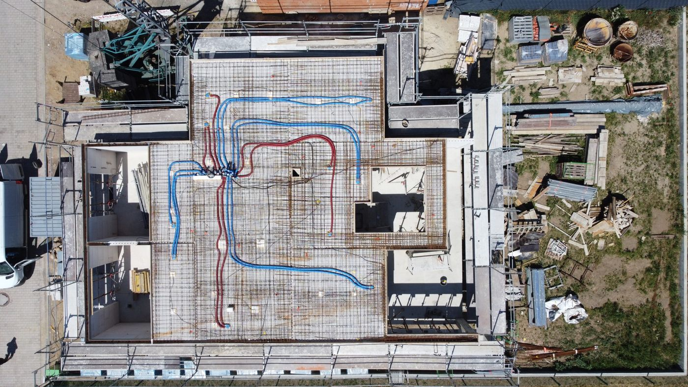
RichtfestDer Dachstuhl steht
Ein paar Tage nach dem Betonieren stellen wir den Dachstuhl auf und verankern ihn in der Decke. Nach getaner Arbeit gibt’s ein Grillerchen mit allen Baubeteiligten, Familie, Freunden und Nachbarn.
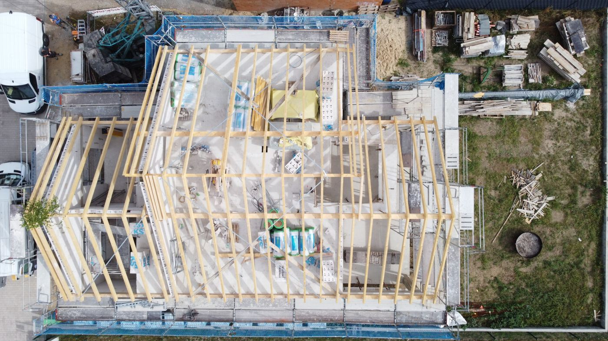
Dach vorbereitenUnterspannbahn und Lattung
Auf den Dachstuhl wird die Unterspannbahn getackert. Anschließend wird das Dach auf das entsprechende Ziegelmaß eingelattet.
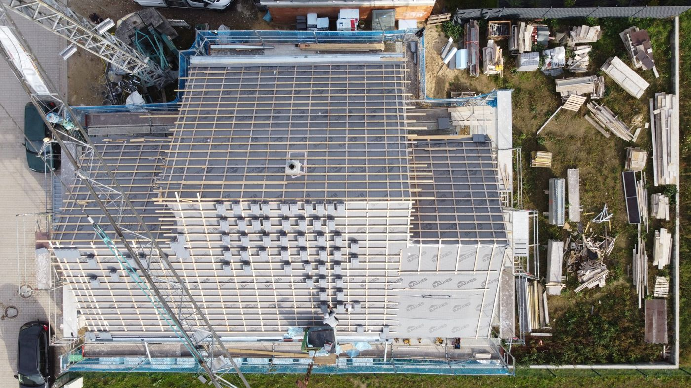
Dach eindeckenOrtgang zuerst, dann die Fläche
Wir fangen mit den Dachrändern – den Ortgangziegeln – an und decken anschließend das gesamte Dach ein. Lüftungsziegel werden zwischendurch an der richtigen Stelle für die Entlüftung eingebaut.
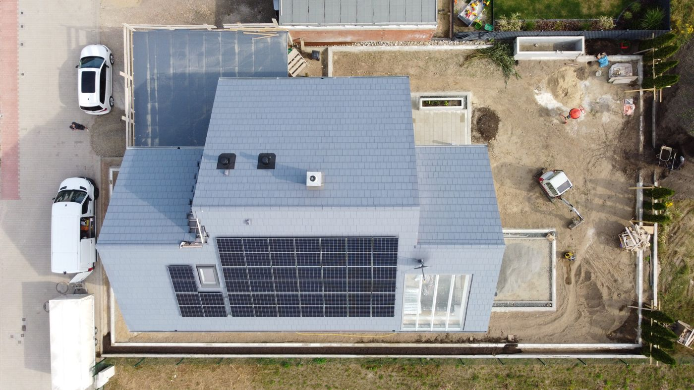
SchlüsselfertigSo kann’s aussehen
Dach gedeckt, Photovoltaik auf dem Dach, Garten angelegt – fertig. So könnte auch Ihr Bauprojekt aussehen. Machen Sie sich ein eigenes Bild und sprechen Sie uns an.
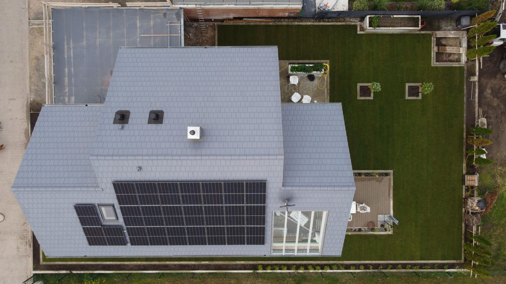
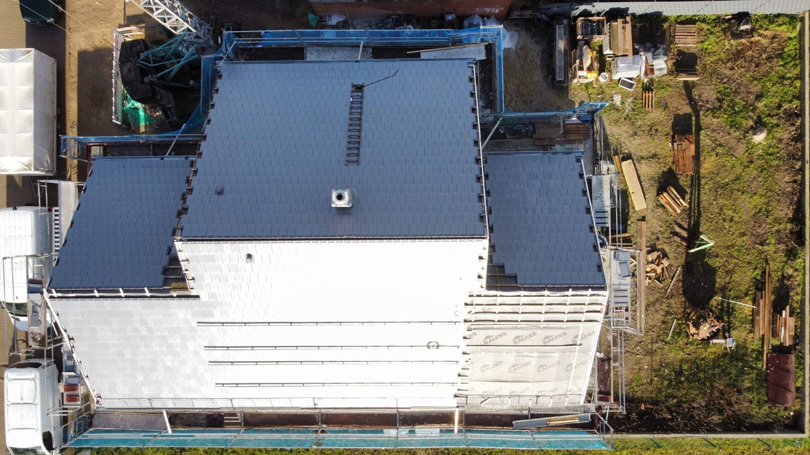
Ihr Haus von oben?